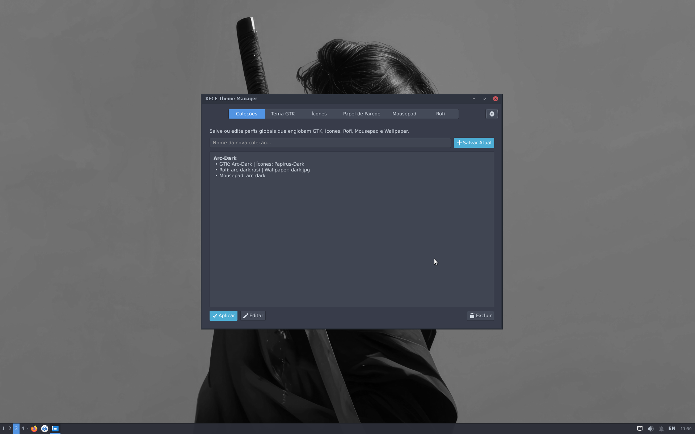
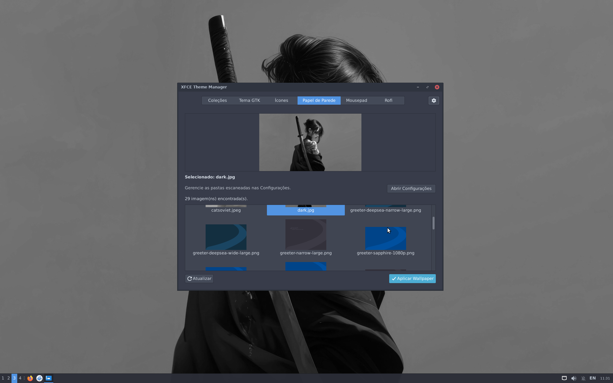
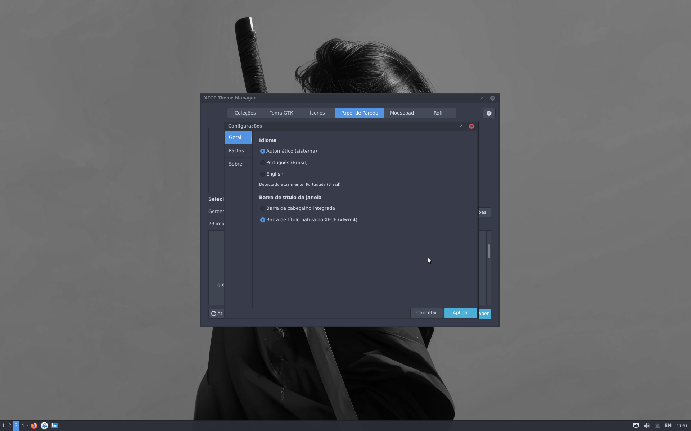

Aplicação gráfica leve em Python e GTK3 para alternar temas GTK e XFWM, ícones, cursores, fontes, papéis de parede, Rofi e Mousepad em um só lugar.



| Atalho | Ação |
|---|---|
| Ctrl + F | Focar o filtro da aba atual |
| Ctrl + , | Abrir as Configurações |
| Ctrl + Q | Sair do aplicativo |
| Recurso | Diretórios Buscados | Método de Aplicação |
|---|---|---|
| GTK | ~/.themes, XDG share |
xfconf (xsettings) |
| XFWM | ~/.themes, XDG share (xfwm4/themerc) |
xfconf (xfwm4) |
| Ícones | ~/.icons, XDG share |
xfconf (xsettings) |
| Cursores | ~/.icons, XDG share (cursors/) |
xfconf (xsettings) |
| Fontes | — | xfconf (xsettings, xfwm4), terminalrc |
| Wallpaper | Backgrounds XDG e ~/Imagens (xdg-user-dirs) |
xfconf (xfce4-desktop) |
| Rofi | ~/.config/rofi/themes, XDG share |
Gravação direta em config.rasi |
| Mousepad | Estilos gtksourceview |
gsettings ou mousepadrc |
O xfconf é acessado via D-Bus; se indisponível, o app usa o xfconf-query.
3python3-gigir1.2-gtk-3.0gir1.2-gdkpixbuf-2.0xfconfxfdesktop4xfwm4mousepadrofi